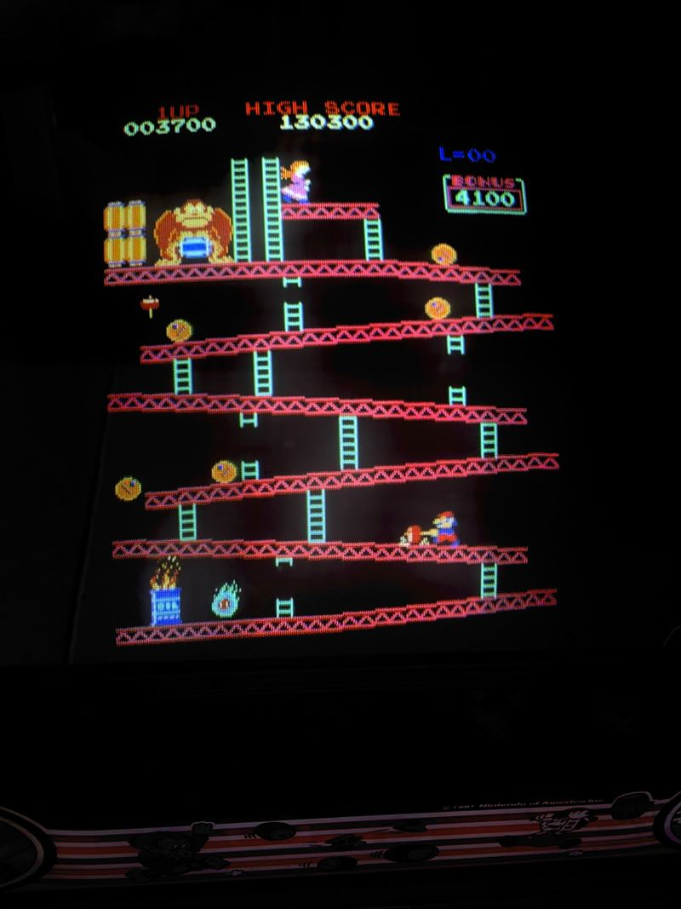
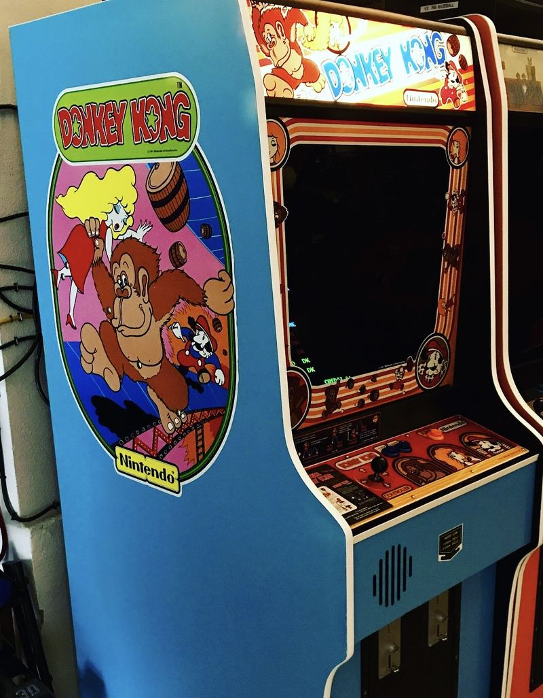

Donkey Kong
Blue plywood, made in Japan. The machine that started Nintendo's arcade legend, and most collections worth the name.
Before Nintendo was a household name in America it was a Japanese company with a warehouse of unsold cabinets and one last idea. Donkey Kong was that idea: a carpenter, a barrel-throwing ape, and a girl on a girder. It rescued the company, it introduced the character who would carry it for the next forty years, and it did both by being a genuinely brilliant game rather than a lucky one.
This one is blue plywood, made in Japan — the construction collectors look for. It sits in the garage row between the VS. UniSystem and the Mario Bros. widebody, marquee lit, on free play. It also has a trick: a switcher fitted with an original Donkey Kong Jr. board, so the same cabinet plays both games. Nintendo's own sequel, in the cabinet it belongs in, without swapping anything.

What it looks like running
Donkey Kong's monitor is mounted vertically, which is why the screen is taller than it is wide. That was a deliberate choice: the whole game is about climbing, and a portrait screen gives you more girders to climb. Almost every arcade conversion of the era got this wrong; the original never did.


Work log
What has been done to it. Very little, by design — this one is close to how it left the factory.
- Riddled TV switcher fitted — Carrying an original Donkey Kong Jr. board, so the cabinet plays both games.
- Reproduction side art on one side — The other side is original.
Nintendo
Upright, made in Japan, blue plywood.
Donkey Kong
1981. Vertical monitor, single joystick, one button.
Free play
In the garage row, marquee lit.
Donkey Kong sits in the garage row alongside the VS. UniSystem, the Mario Bros. widebody and Big Blue. See the whole lineup →